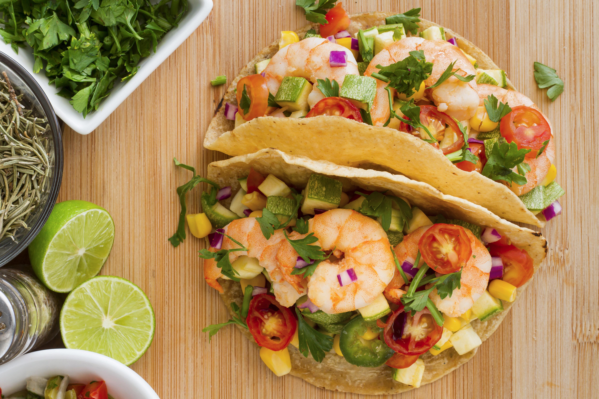

Home
Shrimp Tacos

Delicious and Healthy Tacos
Juicy, seasoned shrimp tucked into warm tortillas and topped with fresh slaw,
creamy sauce, and a squeeze of lime - these shrimp tacos are light,
flavorful, and perfect for any day of the week.
Ingredients
- Shrimp
- Olive oil
- Spices
- Flour Tortillas
- Toppings
Steps
- WASH YOUR HANDS
- Cook the shrimp and season well
- Prepare the toppings
- Prepare the tortillas
- Assemble the tacos
- Eat the tacos